Retour
Page précédente
Page suivante
QCM : Les sols - Auto-évaluation
À l'interface entre lithosphère, atmosphère, hydrosphère et biosphère ?
1. Que peut-on faire pour lutter contre l'hydromorphie de sols générée par une nappe d'eau perchée ?
A) Labourer le sol.
B) Installer un système de drainage superficiel du sol.
C) Irriguer le sol.
D) Chauler le sol.
Commentaire:
Pour remédier à l'hydromorphie due à une nappe d'eau perchée, l'installation d'un système de drainage superficiel permet d'évacuer l'excès d'eau et de réduire la saturation du sol, favorisant ainsi un environnement propice à l'agriculture.
2. Voici le profil pédologique schématique d'un sol. A quel type de sol, cela correspond-t-il ?
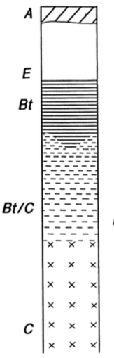
×
A) Un sol brun (ou brunisol).
B) Un ranker (ou rankosol).
C) Un sol lessivé (ou luvisol).
D) Un podzol (ou podzosol).
Commentaire:
Ce profil correspond à un sol lessivé (luvisol), caractérisé par un horizon éluvié (appauvri en argiles) et un horizon d'accumulation (illuvié) où les argiles se sont déposées, souvent trouvé dans des climats tempérés sous des végétations variées.
3. Voici le profil pédologique schématique d'un sol. A quel type de sol, cela correspond-t-il ?
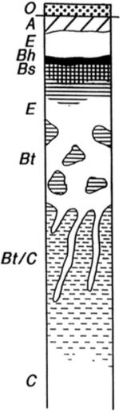
×
A) Un sol brun (ou brunisol).
B) Un podzol (ou podzosol).
C) Un sol lessivé (ou luvisol).
D) C'est plus compliqué que cela. On a la superposition de deux sols: un podzol au-dessus d'un sol lessivé.
E) Un ranker (ou rankosol).
Commentaire:
Ce profil montre une situation complexe avec la superposition d'un podzol, caractérisé par un horizon éluvié et des accumulations de matière organique, sur un sol lessivé (luvisol), témoignant de processus pédogénétiques multiples influencés par des variations climatiques ou des changements dans la végétation.
4. Voici le profil pédologique schématique d'un sol. A quel type de sol, cela correspond-t-il ?
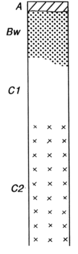
×
A) Un podzol (ou podzosol).
B) Un sol brun (ou brunisol).
C) Un sol lessivé (ou luvisol).
D) Un ranker (ou rankosol).
Commentaire:
Ce profil correspond à un sol brun (brunisol), caractérisé par une teinte brun foncé homogène due à une bonne activité biologique et une faible différenciation des horizons, souvent observé sous climat tempéré et végétation forestière ou prairiale.
5. Voici le profil pédologique schématique d'un sol. A quel type de sol, cela correspond-t-il ? (les petites croix représentent du calcaire)
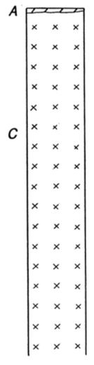
×
A) Une rendzine
B) Un podzol (ou podzosol).
C) Un sol brun (ou brunisol).
D) Un ranker (ou rankosol).
Commentaire:
Une rendzine est un sol mince et riche en matières organiques, souvent formé sur une roche-mère calcaire, comme le montrent les petites croix représentant des fragments calcaires dans le profil. Ce type de sol est typique des zones karstiques ou calcaires.
6. Dans les podzols, à quoi est due la formation du liseré noir juste en-desssous de l'horizon blanchi ?
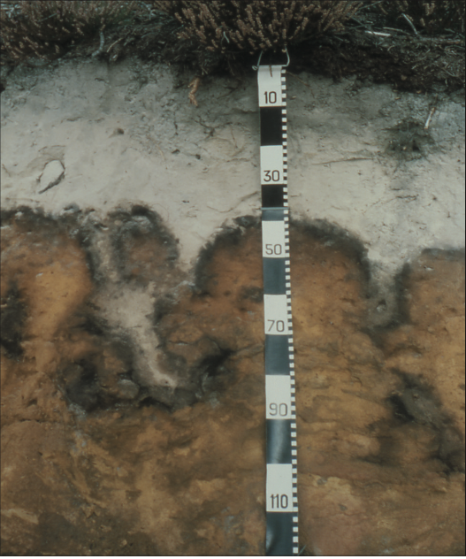
×
A) À l'accumulation de matières organiques.
B) À des reprécipitations d'oxydes du fer.
C) À des remontées de bitume.
D) À la formation de matières charbonneuses.
Commentaire:
Le liseré noir sous l'horizon blanchi dans les podzols est dû à l'accumulation de matières organiques complexes (acides fulviques et humiques) qui se déplacent depuis l'horizon supérieur éluvié et se déposent juste en dessous, souvent accompagnées d'aluminium ou de fer complexé.
7. Quel type d'humus trouve-t'on dans l'horizon de surface d'un podzol ?
×
A) Le mull
B) Le mor
C) Le moder
Commentaire:
Le mor est un humus caractéristique des podzols, où la décomposition de la matière organique est lente en raison de conditions acides et froides. Il se distingue par une faible incorporation de la matière organique dans le sol minéral et une accumulation en surface.
8. L'agriculture intensive des céréales nécessite des apports importants d'engrais azotés à l'origine d'émissions non négligeables de protoxyde d'azote N
2
O, un puissant gaz à effet de serre. Comment est créé principalement ce protoxyde d'azote ?
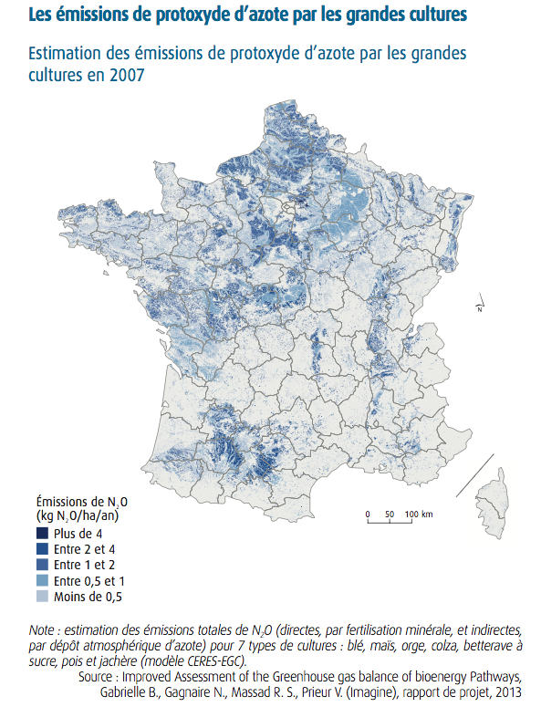
×
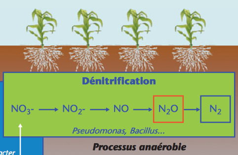
×
A) La production de N
2
O est issue principalement de la réduction des nitrates en cas d'aération imparfaite du sol.
B) La production de N
2
O est issue principalement de l'oxydation des nitrates en cas d'aération imparfaite du sol.
C) La production de N
2
O est accentuée quand de trop grandes quantités de nitrates sont déversées.
D) La production de N
2
O est accentuée dans les sols argileux qui ont tendance à présenter des excès d'eau.
Commentaire:
Le N₂O est principalement produit par la dénitrification, un processus biologique où les nitrates (NO₃⁻) sont réduits par des bactéries en conditions d'anaérobiose partielle (sols mal aérés). Cette production est amplifiée dans les sols argileux saturés en eau et par des excès d'engrais nitrés.
9. La carte ci-dessous montre la quantité de carbone organique dans l'horizon superficiel des sols. Dans quels environnements, celle-ci est-elle la plus importante ?
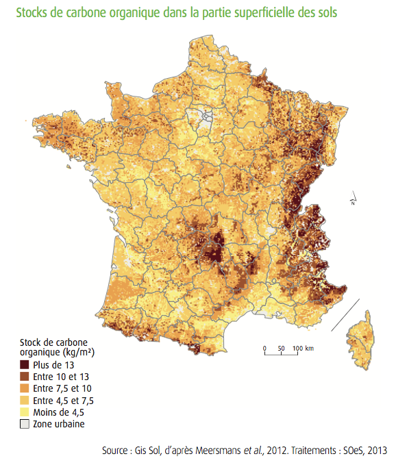
×
A) Dans les sols de montagne.
B) Dans les régions viticoles.
C) Dans les régions de céréaliculture intensive.
Commentaire:
Les sols de montagne présentent souvent une teneur élevée en carbone organique, car les basses températures ralentissent la décomposition de la matière organique, favorisant son accumulation dans l'horizon superficiel.
10. Pour quelle raison, les sols de montagne sont caractérisés par un stock plus important de carbone organique (plus de 13 kg de C/m
2
) ?
×
A) À cause de la rudesse du climat en montagne, qui ralentit l'activité microbienne, et donc la décomposition et la minéralisation de la matière organique.
B) Parce que ces sols sont caractérisés par une importante activité microbienne favorisant l'accumulation de matières organiques.
Commentaire:
Les températures basses et les conditions climatiques rigoureuses des zones montagneuses réduisent l'activité microbienne, ce qui ralentit la décomposition de la matière organique. Cela favorise son accumulation et explique les stocks élevés de carbone organique dans ces sols.
11. Qu'est-ce que la réserve utile (RU) dans un sol ?
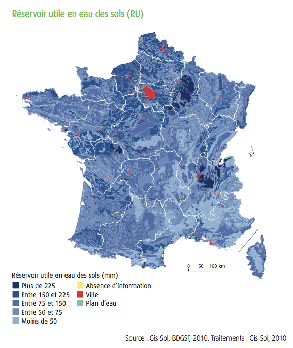
×
A) La réserve utile est la quantité d'eau, mesurée en millimètres, utilisable par les plantes pour leurs besoins.
B) La réserve utile est la quantité d'eau, mesurée en millimètres, stockée dans un sol.
C) La réserve utile est la quantité d'eau, mesurée en millimètres, utilisable pour les apports en eau potable.
Commentaire:
La réserve utile correspond à la quantité d'eau retenue dans le sol entre la capacité au champ et le point de flétrissement, qui peut être exploitée par les racines des plantes pour leur croissance.
12. Pourquoi la réserve utile (RU) est-elle mesurée en millimètres ?
A) Car c'est un volume d'eau rapportée à une surface de terrain donnée.
B) Car c'est mesurée par un pluviomètre et cet instrument mesure une hauteur d'eau exprimée en millimètres.
C) Car c'est mesurée par un potomètre et cet instrument mesure une hauteur d'eau exprimée en millimètres.
D) Car c'est mesurée par un piézomètre et cet instrument mesure une hauteur d'eau exprimée en millimètres.
Commentaire:
La réserve utile représente le volume d'eau disponible dans le sol pour les plantes, et est exprimée en millimètres car cela correspond à la quantité d'eau accumulée sur une surface donnée, comme si cette eau se déposait sous forme de précipitations.
13. Dans quel type de sol, la réserve utile (RU), est-elle la plus forte ?
×
A) La RU est la plus forte dans les sols cohérents fissurés.
B) La RU est la plus forte dans les sols argileux.
C) La RU est la plus forte dans les sols sableux.
D) La RU est la plus forte dans les sols limoneux.
Commentaire:
Les sols limoneux ont une capacité de rétention d'eau plus élevée que les sols sableux et argileux, car ils équilibrent bien la capacité de drainage et de rétention.
14. Qu'est-ce qu'on appelle la texture de l'horizon d'un sol ?
A) La forme et la taille des agrégats qui se forment dans un sol.
B) La proportion massique des argiles (au sens granulométrique), des limons et des sables dans la fraction détritique d'un sol.
C) La disposition et l'orientation des grains du sol.
D) La répartition spatiale, homogène ou hétérogène, des particules dans le sol.
Commentaire:
La texture du sol se réfère à la proportion relative des différentes tailles de particules minérales (argile, limon, sable) dans un sol. C'est la réponse A qui définit correctement la texture.
15. Qu'appelle-t'on les minéraux primaires dans un sol ?
A) Les minéraux issus de la désagrégation mécanique de roches magmatiques.
B) Les minéraux issus de la désagrégation mécanique de roches du socle.
C) Les minéraux issus de la désagrégation mécanique des roches.
D) Les minéraux issus de l'altération des roches.
Commentaire:
Les minéraux primaires sont les premiers minéraux que l'on retrouve dans un sol, ceux qui sont hérités directement de la roche mère. Ils n'ont pas subi de transformations chimiques importantes.
16. Sous quel autre terme, peut-on désigner les minéraux primaires d'un horizon ?
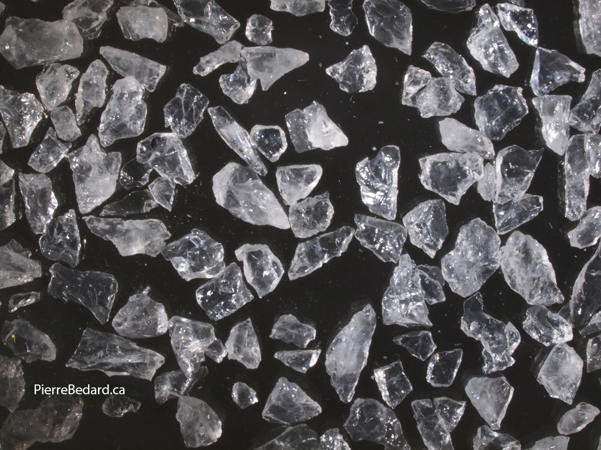
Grains de quartz &&
×
A) Les minéraux du Primaire
B) Les minéraux hérités
C) Les minéraux magmatiques
D) Les minéraux du Paléozoïque
Commentaire:
Minéraux primaires et minéraux hérités, ces deux termes sont synonymes et désignent les mêmes éléments. Ils correspondent aux minéraux qui sont présents dans le sol directement depuis la roche mère, sans avoir subi de transformations chimiques importantes. Ils sont donc "hérités" de la roche d'origine.
17. Qu'est-ce qu'on appelle les minéraux secondaires ?
A) Les minéraux issus de roches sédimentaires
B) Les minéraux issus de la trasformation de minéraux primaires.
C) Les minéraux datant du Mésozoïque.
D) Les minéraux néoformés.
Commentaire:
Les minéraux secondaires sont des composants essentiels du sol qui se forment à partir de l'altération et de la transformation des minéraux primaires. Ces derniers, issus directement de la roche mère, sont progressivement modifiés par des processus chimiques et physiques, tels que l'hydrolyse (décomposition des minéraux primaires avec libération des ions solubles) et l'oxydation.
18. Parmi ces minéraux, lesquels constituent le plus souvent des minéraux secondaires ?
A) Les argiles.
B) Les oxydes et hydroxydes de fer.
C) Les quartz.
D) Les oxydes et hydroxydes d'aluminium.
E) Les feldspaths.
Commentaire:
Les bonnes réponses sont les argiles, les oxydes et hydroxydes de fer, et les oxydes et hydroxydes d'aluminium. Ces trois catégories de minéraux sont typiquement des minéraux secondaires formés par l'altération des minéraux primaires (comme le quartz et les feldspaths, qui sont des minéraux primaires).
19. À quoi est due la couleur rouille, orange, jaune, marron ou rouge des sols ?
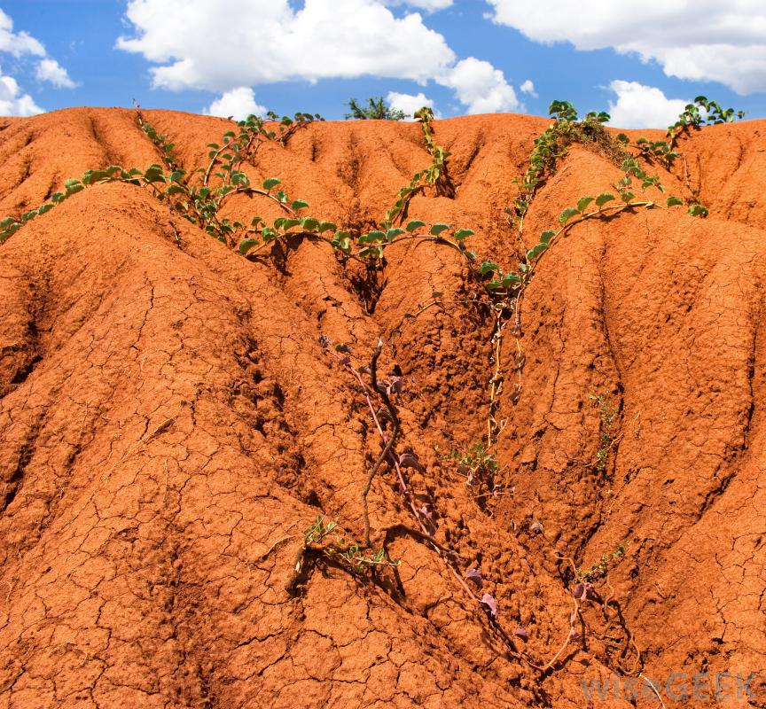
×
A) À de la magnétite.
B) À des ferrites.
C) Aux oxydes et hydroxydes de fer, principalement sous forme ferrique (Fe
3+
).
D) Aux oxydes et hydroxydes de fer, principalement à l'état ferreux (Fe
2+
).
Commentaire:
Les oxydes et hydroxydes de fer sont des minéraux secondaires qui se forment par l'altération de minéraux contenant du fer, comme la biotite.
La couleur de ces composés varie du jaune pâle au rouge foncé en fonction de leur degré d'hydratation et de leur cristallisation.
Le fer ferrique (Fe³⁺) est particulièrement responsable des teintes rouges et brunes. Il forme des liaisons plus stables avec l'oxygène que le fer ferreux (Fe²⁺), ce qui explique sa prédominance dans les sols bien drainés et exposés à l'air.
20. Dans la majorité des cas, quel est le devenir final d'un sol ?
A) De se durcir et s'épaissir de plus en plus.
B) D'être recouvert par d'autres dépôts et enfoui pour donner un paléosol.
C) D'être repris par l'érosion, avec libération de ses éléments constitutifs qui sont recyclés pour la formation de nouvelles roches sédimentaires dans les lacs ou les océans, ou pour le développement d'organismes vivants.
Commentaire:
Le sol est un système dynamique en constante évolution, soumis à l'action de nombreux facteurs externes comme le climat, la végétation, la gravité et l'activité humaine. Au fil du temps, les sols sont soumis à des processus d'érosion qui entraînent leur dégradation progressive.
Corriger
Recommencer